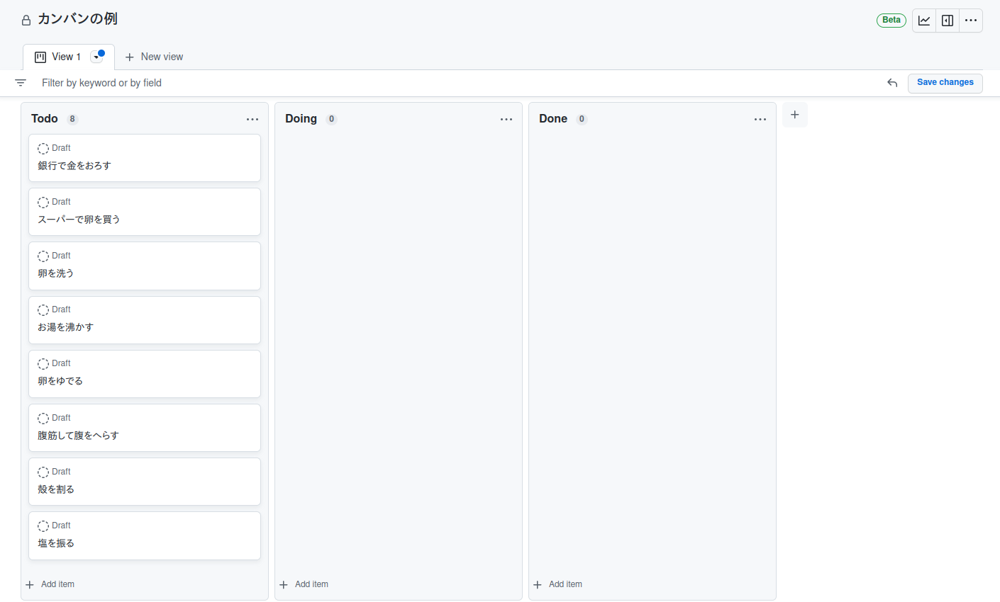
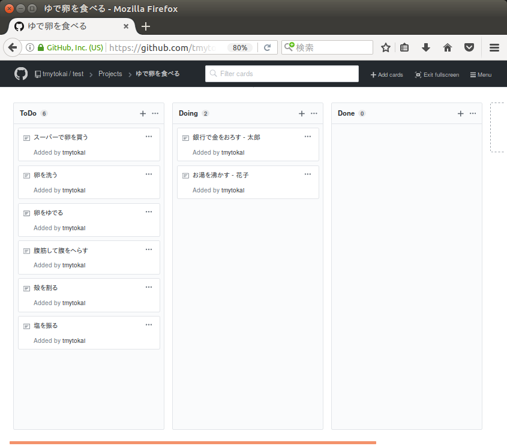
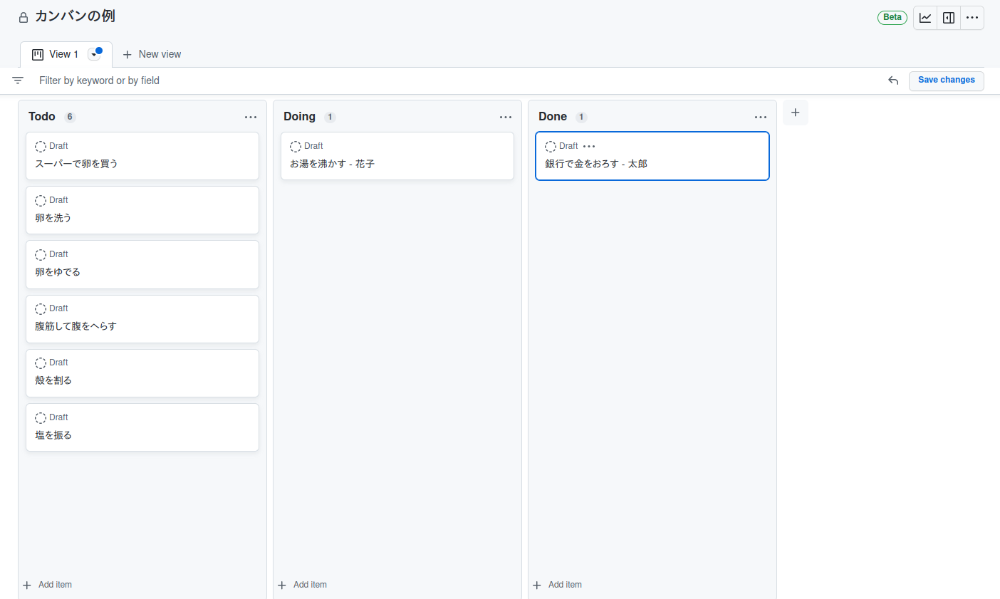
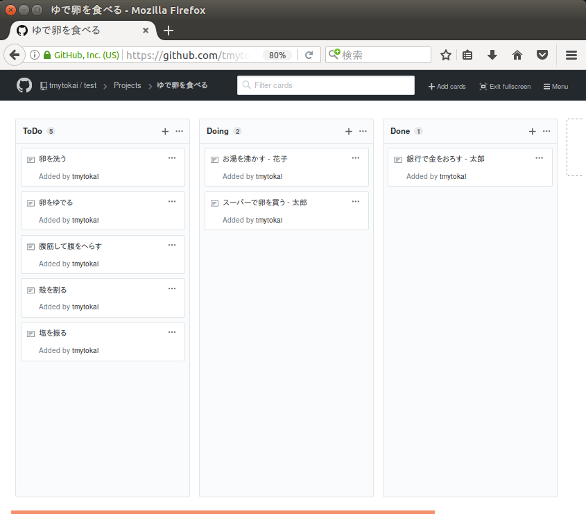
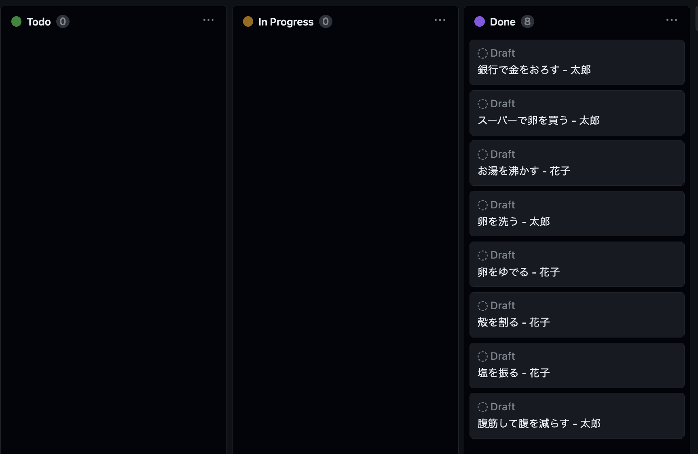

では実際に「ゆで卵を食べる」ことを目的にカンバンを使ってみましょう。
今回は Githubの Projects 機能を使って説明します。
まずWBSを使ってタスクを抽出し、カンバンの初期状態を図1としました。
図1. カンバンの初期状態
次に依存関係に気を付けつつ、2人のメンバー(太郎と花子)が自分が担当するタスクを選んで名前を記入し、「In Progress(Doing)」状態にします。
図2. タスクを選んで In Progress(Doing) 状態に変更
さて太郎は作業が終わったのでタスクを Done 状態にします。花子はまだ作業中です。
図3. タスクが終了したら Done 状態に変更
花子はまだ作業中ですが、太郎は花子が実行しているタスクに依存しないタスクを選んでまた In Progress(Doing) 状態にし作業を開始します。
図4. 再びタスクを選んで In Progress(Doing) 状態に変更
以上を繰り返すといつかは全てのタスクが Done 状態になってプロジェクト完了になります。
図5. 全てのタスクが Done 状態になったら終わり
